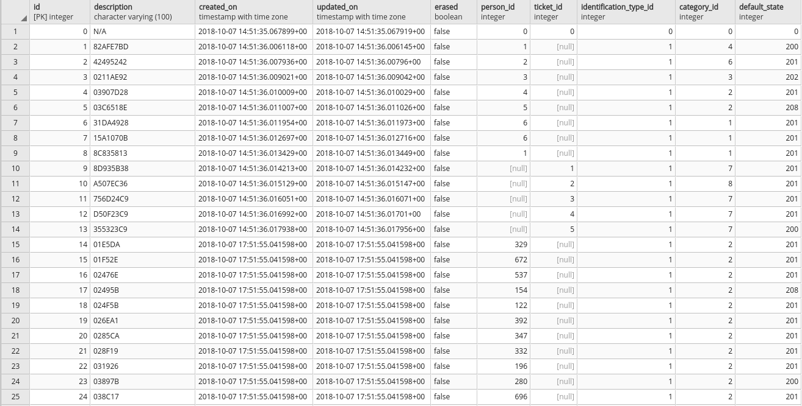
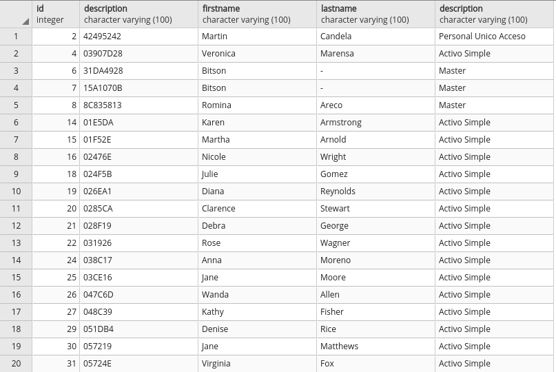

NoSQL
Bases de Datos no relacionales
URL Presentación
JSON
Javascript Object Notation
Notación para el intercambio de información
- XML
- TOML
- YAML
- ...
JSON
Es un archivo de texto plano
{
"nombre": "Bruno",
"edad": 36,
"altura": 1.78
}
XML
Etiquetas custom
Bruno
36
1.78
Bases de Datos
Conjunto de datos almacenados en el contexto de un Software
- Relacional
- No Relacional
Relacional
- Tablas
- Claves foráneas que relacionan las tablas
- Estructura rígida de los datos
No Relacional
- Documentos
- La relación está en el mismo documento
- Estructura flexible de los datos
SQL

SELECT i.id, i.description,
p.firstname, p.lastname,
c.description
FROM "Identifications" i
JOIN "Categories" c ON i.category_id = c.id
JOIN "States" s ON i.default_state = s.id
JOIN "People" p ON i.person_id = p.id
WHERE s.description = 'Para Ingresar';

NoSQL
{
"id": 2,
"description": "42495242"
"person": {
"firstname": "Martín",
"lastname": "Candela"
},
"category": {
"description": "Personal Único Acceso"
"multiple access": false
}
"default state": {
"description": "Para Ingresar"
"code": 201
}
}
| SQL | NoSQL |
|---|---|
 | |
GRACIAS
Leandro E. Colombo Viña

Este trabajo está licenciado bajo Creative Commons Attribution-NonCommercial-ShareAlike 4.0 International License.